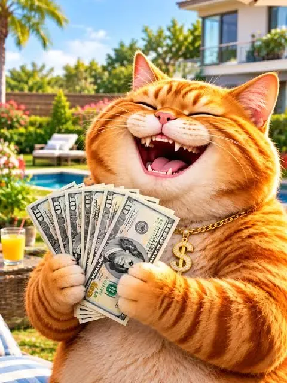
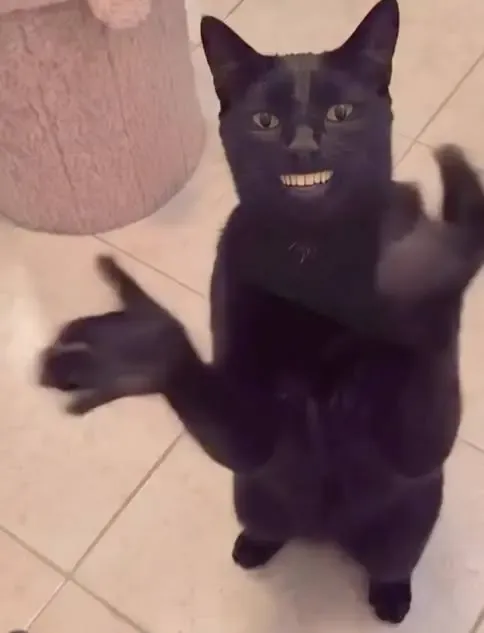
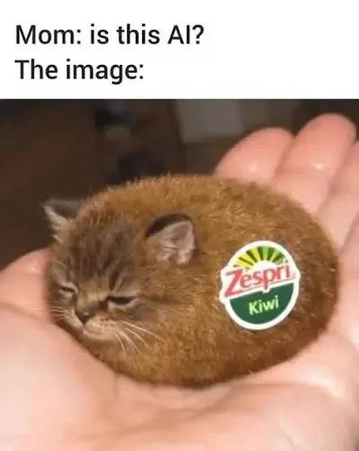
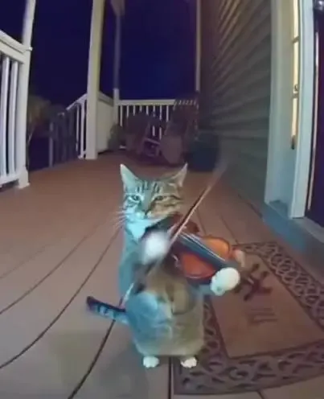
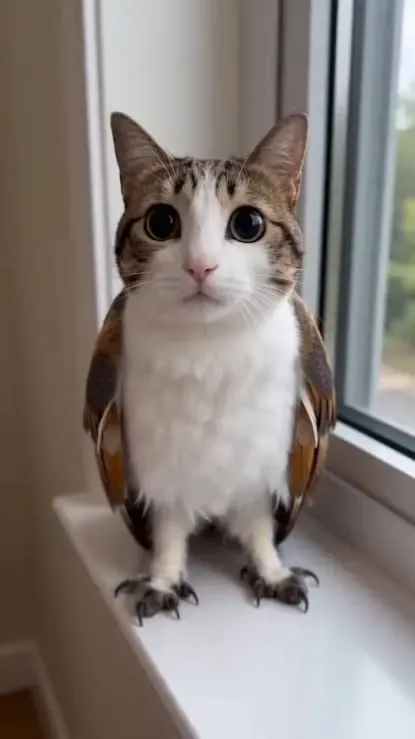
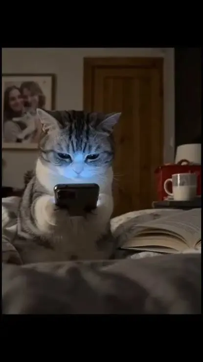

Les nouveaux memes de chats: inoffensifs ou danger?
 sondage
sondageLes nouveaux mèmes
Aujourd'hui, l'intelligence artificielle est devenue un outil de plus en plus utilisé dans notre quotidien, notamment grâce aux générateurs d'images et de vidéos. Ces outils permettent de créer rapidement des contenus très variés, parfois complètement absurdes. Sur TikTok, Instagram, Facebook et d'autres réseaux sociaux, on voit ainsi circuler de nombreuses créations mettant en scène des chats dans des situations humaines ou improbables. Ces images et vidéos sont souvent partagées pour leur côté amusant, surprenant ou décalé.
Les mèmes de chats générés par IA
Les générateurs d'intelligence artificielle permettent aujourd'hui de créer des images et des vidéos de chats dans presque toutes les situations imaginables. Certains les représentent en train de cuisiner, de travailler ou d'imiter des comportements humains. Grâce à leur aspect parfois très réaliste et à leurs situations absurdes, ces créations sont rapidement reprises et partagées sur les réseaux sociaux.
Les dangers de ces nouveaux mèmes
Même si ces créations sont généralement destinées à divertir, elles peuvent parfois poser problème. Certaines images ou vidéos sont tellement réalistes qu'il devient difficile de distinguer une véritable photographie d'un contenu généré artificiellement. Des personnes peuvent alors partager ces créations sans savoir qu'elles ont été produites par une intelligence artificielle. Il est donc important de garder un regard critique sur les contenus que l'on voit circuler sur Internet.
La perte d'authenticité
L'utilisation massive des générateurs d'images peut également modifier la manière dont les mèmes de chats sont créés et partagés. Les photographies spontanées et les vidéos originales risquent d'être moins visibles face à la multiplication des contenus artificiels. Pourtant, une partie du charme des anciens mèmes venait justement de leur authenticité et du caractère inattendu des situations filmées ou photographiées.
Les chiens aussi dans les nouveaux mèmes
Les chats ne sont pas les seuls animaux à apparaître dans les nouvelles créations générées par intelligence artificielle. Les chiens sont eux aussi de plus en plus présents dans ces contenus, notamment dans des vidéos où ils dansent, chantent ou adoptent des comportements humains. Certains mèmes mettent même en scène des chiens à la place des personnages habituellement représentés par des chats. Ces tendances montrent que les créations humoristiques autour des animaux se diversifient. Cependant, MiaouNet fait le choix de se concentrer sur les chats et sur leur place particulière dans la culture Internet.
Quelques exemples de créations et de mèmes de chats

Un chat roux qui semble profiter de sa richesse, entouré de billets et d'une ambiance luxueuse.

Un chat noir applaudit avec des mains humaines pour montrer son approbation de manière ironique.

Un petit chat transformé en kiwi grâce à une étiquette de fruit collée sur son dos.

Un chat semble jouer du violon sur un porche, dans une scène particulièrement insolite.

Un mélange surprenant entre un chat et un hibou, créé à l'origine grâce à un montage photographique.
Origine et histoire du mème · Publication originale sur Weibo

Un chat regarde attentivement son téléphone, comme s'il était absorbé par ce qu'il consulte.